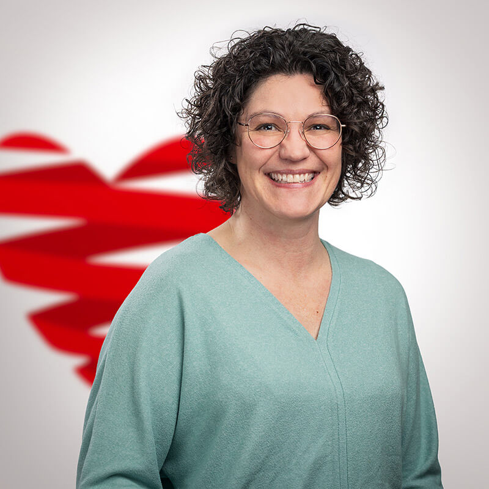

MIT HERZ VERTRETEN
Ihre Ansprechpartner im St. Cyriak Wohnen und Pflege
Unsere Führungspolitik beinhaltet als Schwerpunkt, dass wir nur gemeinsam stark sein können. Wir setzen auf Teamwork und persönliche Übernahme von Verantwortung. Das bedeutet, dass jeder Mitarbeiter im Hause wichtig ist, alle gleich behandelt werden und wichtige Entscheidungen jeweils im Leitungsteam getroffen werden. Die Gesamtverantwortung liegt jedoch bei der Geschäftsführenden Einrichtungsleitung.



Anja Hermann
Ausbildungskoordination/Palliativ Care-Fachkraft


Zu unseren Zielen zählt das menschliche Miteinander, dass alle die im St.Cyriak Wohnen und Pflege ein- und ausgehen sich wohlfühlen, respektvoll als auch wertschätzend betreut, versorgt sowie anerkannt werden und das Wohnen als Lebensqualität verstanden wird.